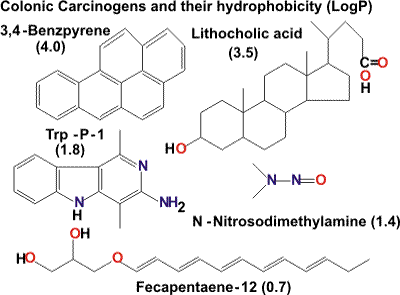
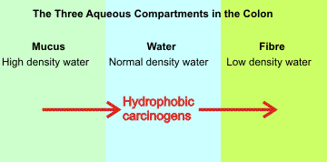

Psyllium husks dietary fiber
Dietary fiber has definite health benefits, likely to prolong life.
 The effect of dietary fiber in digestion
The effect of dietary fiber in digestion
 The colon
The colon
 Colonic Fermentation
Colonic Fermentation
 Water-holding capacity (WHC)
Water-holding capacity (WHC)
 Viscosity and gel formation
Viscosity and gel formation
 Binding to bile acids
Binding to bile acids
Fiber is an important part of a healthy diet
Harvard School of Public Health
Dietary fiber [257, 3693] (often called roughage) has had many health claims [2365]. It is generally accepted as having protective effects b against a range of diseases predominant in Western developed countries [1608], including colorectal cancer, d coronary heart disease [1360], diabetes, obesity, constipation [2682], and diverticular disease [2828]. They also may help control obesity by increasing satiety and reducing appetite within weight-loss programs [1528]. Some have particularly beneficial effects in treating related conditions such as hypertension in the overweight [1258]. The health benefits of fiber supplements have been reviewed, where some supplements are shown to have little benefit, but others are highly beneficial [2829]. The term 'dietary fiber' is commonly defined as plant material that resists digestion by the secreted enzymes of the human alimentary tract but which may be fermented by microflora in the colon. As such, it includes most hydrocolloids. After much debate, there is now an acceptable legal definition of 'dietary fiber' that includes carbohydrate polymers with one or more beneficial physiological effects [1678].e
Increased fiber consumption has been associated with lowering total serum cholesterol and LDL cholesterol, modifying the glycemic and insulinemic response, and protecting the large intestine from diseases. The lowered cholesterol concentrations are associated with highly viscous soluble fibers (e.g., guar gum, psyllium, and β-glucan) rather than soluble, nonviscous, fermentable fibers (e.g., inulin). While the physiological properties of a polysaccharide are challenging to predict from structure alone, they are partly predictable based on physicochemical properties such as fermentation, water-holding capacity, viscosity, and bile acid binding. A model of the effect of dietary fiber on digestion in the small intestine has been developed [2214]. The main components of dietary fiber are non-starch polysaccharides, including cellulose, hemicellulose (composed of various heteropolysaccharides including arabinoxylans), β-glucan, and pectins. Resistant starch is another major component of plant foods that escapes absorption and digestion in the small intestine and behaves, at least physiologically, as dietary fiber. Non-digestible oligosaccharides have aroused significant interest due to their ability to stimulate the growth of potentially beneficial bacteria such as Bifidobacteria and Lactobacillus in the gut [228, 3469] as well as other potential health benefits, including inhibition of intestinal infection and reduction in cancer risk [1192].
The physiological properties of hydrocolloids [1622] are dependent on the site, rate, and extent to which they are absorbed or fermented in the intestine. Consumption of hydrocolloids increases stool weight, alters the gut transit time, alters the activity of the colonic microflora, influences the appetite, absorbs toxins, and modifies the absorption of fats, sugars, minerals, and bile acids. The extent to which specific hydrocolloids exert their physiological effects will be dependent on a complex mixture of structural, chemical, and physical properties (summarized below).
| Physicochemical property | Dietary Sources | Physiological effect |
|---|---|---|
| Fermentation | Resistant starch, β-Glucans, Pectin, Guar | Energy source · increase in biomass Short-chain fatty acid production · Reduction in pH of the colon (inhibition of 7-α-dehydroxylase), The anti-neoplastic activity of butyrate |
| Water Holding Capacity | The non-fermentable portion of hydrocolloids, for example, Cellulose, Arabinoxylans, Algal hydrocolloids | Increased stool bulk· shorter gut transit times |
| Viscosity | Pectin, Guar, β-Glucans, Psyllium | Delayed gastric emptying and slower transit time through the small bowel, glycemic control, cholesterol-lowering |
| Gel Formation | Guar, Locust bean gum, Alginate c | Reduced rate of nutrient absorption (for example, glucose, bile acids) |
| Binding of Organic Molecules | Hydrocolloids with an extensive hydrophobic surface area, for example, β-Glucans, Arabinoxylans, Methyl-cellulose | Binding of bile acids, carcinogens, and mutagens |
| Large particles irritating the colon | Rough wheat bran | Stimulate water secretion, Laxative effect |
| Satiety | Modified starch | Thick and creamy mouth-feel [2364] |
[Back to Top  ]
]
The digestive tract, adapted from Blausen.com.
The path of food in our digestive tract is (see left):
in → mouth → esophagus → stomach → small intestine (duodenum → jejunum → ileum) → colon → anus → out.
Dietary fiber has effects throughout the digestive tract. However, it is not changed (i.e., it remains undigested) until it gets to the colon when it may or may not be fermented, dependent on its structure (see below). The pH varies with passage through the digestive tract, with the pH of saliva, upper stomach, lower stomach, ileum, jejunum, small intestine, and large intestine being 6.5-7.5, 4.0-6.5, 1.5-4.0, 7.0-8.5, 4.0-7.0, 4.0-7.0, and 4.0-7.0, respectively, with the variations depending on the time of food intake.
Dietary fiber can affect satiety (fullness) by bulking foods, and increasing their viscosity and gelling in the stomach. These factors slow stomach (gastric) emptying and small intestine transit [2612]. The increased bulk and viscosity together with any gel formation from the dietary fiber delays the hydrolysis and absorption of nutrients (such as amino acids, sugars, and fats) in the small intestine, leading to a more even delivery of nutrients throughout the small intestine rather than mainly within the jejunum. Thus, more nutrients are delivered to the distal ileum with subsequent stimulation of feedback mechanisms, slowing gastric emptying, increasing small bowel transit time, and decreasing appetite [2612]. Within sufficient dietary fiber, some nutrients reach the colon, where they are fermented, losing half their calorie content.
The human colon
The colon is an essential part of our digestive tract and consists of several distinct areas (see right). f It contains the individual's symbiotic microbiome, necessary for life and primarily involved in anaerobic fermentation. j The microorganisms are partially controlled by the diet [3560], which determines the colonic metabolism, and impacts human physiology [3474]. The colon is responsible for recovering ingested and secreted water and electrolytes, plus the salvage of energy from undigested food by fermentation. The colon has a 'skin' about a millimeter thick with a high surface area of invaginations ('crypts') but covered with a thick layer of highly hydrophilic mucus (≈ 2% w/v of mainly MUC2 g) used as a lubricant and protective layer and associated with high-density water.
The highly hydrated mucus is required as the colon is exposed to numerous hazards and is heavily colonized by microorganisms that must be kept separated from the epithelium (body lining). The healthy consequence is that mucus encapsulates the fecal stools (containing most of the bacteria), which are further covered in the distal colon (descending, sigmoid and rectal colons) [4127].
Every day about 60 g solids and 1600 mL water iare ingested with about a further 7 liters of water secreted in the upper digestive tract. The size of the human colon is not well known and much smaller than commonly quoted, with its variable volume (about 0.5 L), containing about 20% gas and about 4 ˣ 1013 bacteria [2485] (similar to the number of human cells in a human body).
Digested food from the small intestine, containing the excess secreted water, enters the ascending colon at the lower right-hand side of the body (on the left in the diagram). The ascending colon squeezes in pulses (with the contained material rising and falling) when most of this excess water is recovered.
3D colon
As the material becomes more solid and less liquid, its viscosity increases and eventually, it passes over the top into the transverse colon. Water continues to be removed along with fermentation products (see below) in the transverse colon and into the descending colon, where fecal matter gathers. The sigmoid colon is surrounded by muscle that contracts to expel this matter through the rectum. The food takes about two days to travel through the digestive tract with this time spent mostly in the colon. The fecal output (about 130 mL, and containing about 19 g dry weight of bacteria) contains only about 11 mL of free water and 18 g of non-bacterial solids; the remainder is bound water.

As the material travels through the colon, the organisms present extract energy by rearranging their atoms, generally by removing the more hydrophilic parts such as carbon dioxide and short-chain fatty acids. Such an environment tends to keep carcinogenic hydrophobic materials( from the diet or formed by fermentation) away from the live cells of the colon wall, so reducing any cancer risks. Consequently, the molecules that remain are either non-fermentable (e.g., 3,4-benzpyrene and other polycyclic aromatic hydrocarbons from smoked foods plus the natural bile acid lithocholic acid) or fermentation products (e.g., heterocyclic aromatic hydrocarbons particularly tryptophan metabolites, such as Trp-P-1, from cooked red meat and other high-quality protein, fecapentaene-12: from anaerobic organisms and N-nitroso-dimethylamine from protein and nitrates). Many of these are quite hydrophobic (see right with their relative hydrophobicitiesh) and associated with cancer. As the fermentation is progressive through the colon, it is not surprising that the highest concentration of such molecules is at the colon's distal end, which is associated with the higher risk of cancer here, even with the progressively thicker mucus layer (see table below).
| Colon (typical) | Right (up) | Transverse | Left (down) | Sigmoid (storage) | Rectum (out) |
|---|---|---|---|---|---|
| Volume, cm3 | 350 | 300 | 200 | 80 | 20 |
| Mucus surface, cm2 | 380 | 420 | 320 | 200 | 60 |
| Mucus depth, µm | 430 | 460 | 540 | 580 | 620 |
| Relative cancer risk | 6 | 8 | 6 | 26 | 42 |

Within the colon, there are several aqueous environments. The two most important of these are formed by mucus and dietary fiber. These form separated aqueous compartments (i.e., phases), whether they are completely dissolved or not. Also, dietary fiber can combine with intestinal mucus to produce a denser layer that significantly delays the transport of hydrophobic materials [2561]. The properties of these aqueous phases depend on the structure of the macromolecules and consist of low-density water around the fermented dietary fiber residue and higher-density water throughout the mucus. These conditions will encourage the partition of carcinogens and potential carcinogens and protective agents between the phases in such a way as to be potentially either protective or harmful. Further, as the material passes through the colon, the action of microorganisms changes the properties of the phases in a way that may be either beneficial or harmful, depending on their structure.
The concentration of the carcinogens within the mucus towards the rectum coincides with increased cancer prevalence. Dietary fiber generally tends to partition hydrophobic carcinogens away from this mucus and towards the partially fermented dietary fiber, so reducing cancer risk. When more unfermented fiber is present, a low-density water environment with greater aqueous volume is produced, which will further extract the hydrophobic molecules so causing a further reduction in their concentration within the mucus and hence in harmful contact with the live cells beneath [1806]; the fiber and mucus environments behaving like a 'typical' partitioning aqueous biphasic system. High stool weight and throughput with a high-fiber diet are associated with low colon cancer occurrence. In contrast, low fiber diets and constipation are more associated with increased cancer risk due to the longer contact time and low water content with consequent lower partitioning within the fecal material.
[Back to Top  ]
]
The rate, extent, and site of hydrocolloid fermentation in the gut are dependent on several factors, including solubility, chemical structure, availability of other more readily fermentable substrates, and the composition of the colonic microflora [1927]. Hydrocolloids, generally being relatively pure additives, are more available than typical dietary fiber, which is naturally complexed with plant material and often consumed as whole grains. Water-soluble hydrocolloids are more readily available and will be fermented earlier in the colon than insoluble hydrocolloids, so long as suitable microbial enzymes are available. Terminal residues are fermented first, and hydrocolloids containing α-L-arabinofuranose or α-D-galacturonic acid residues are generally more susceptible to fermentation. Of the major components of dietary fiber, xylans, pectins, and gums are significantly fermented in the gut, seaweed polysaccharides less so, cellulose is only partially broken down, and lignin is essentially an inert material. Resistant starch, which forms a significant part of the substrate available for colonic fermentation, is completely degraded in the large bowel and probably has a significant role in the protection systems associated with carbohydrate fermentation. Insoluble fibers are difficult to digest because a two-phase reaction is involved. However, insoluble particles (for example, resistant starch) may provide a surface for the growth of bacterial microcolonies in fermentative processes. Exactly where and how quickly fermentation takes place is important. Some soluble fibers become partially insoluble due to hydrolysis by gut enzymes, but conformational 'persistence' may prevent the fiber from precipitating while in the colon. There is a time lag before precipitation and, if there is insufficient time for the fiber to precipitate, it persists in solution.
The most significant end-products of colonic fermentation are the short-chain fatty acids (SCFA) acetic, propionic, and butyric, and the gases carbon dioxide, hydrogen, and methane. Short-chain fatty acids are an essential energy source for anaerobic bacteria and may play a role in preventing colorectal cancer. Butyrate directs colonic surface cells to use up remaining oxygen through the β-oxidation pathway. Keeping the colon anaerobic offers protection against the growth of pathogenic bacteria, such as Escherichia coli and Salmonella, that can lead to bowel disease [3011]. The SCFA also represent a significant salvage of energy for the body, recovering about half the energy that would have been available had the hydrocolloid been digested and absorbed in the small intestine. SCFA lowers the intestinal pH resulting in enzymatic inhibition of the 7-α-dehydroxylase, which catalyzes secondary bile acid formation, and further reduces secondary bile acid concentrations due to precipitation. Lower colonic pH may also change the composition of the gut flora to one less prone to produce carcinogens. Butyrate has been proposed to have a direct role in colorectal cancer prevention due to its ability to inhibit colon carcinoma cell growth in vivo.
Specific hydrocolloids may vary in both the composition and total concentration of SCFA produced during colonic fermentation. When incubated with human fecal microflora, hydrolyzed guar gum produces the highest levels of total SCFA compared with other dietary fiber sources. Cellulose produces significantly higher levels of propionate. Arabinoxylan oligosaccharides alter the bacterial composition of the colon beneficially by stimulating the growth of bacteria from the genera Bifidobacteria in preference to the potentially more harmful anaerobic bacteria such as Clostridium spp. Similarly, galactomannans are readily fermented by the beneficial organisms Bifidobacteria and Lactobacilli. Resistant starch, however, has been reported to stimulate the growth of the more anaerobic Clostridia species.
There are connections between a person's (healthy) gut flora, their mothers when in the womb, and aspects of their general and mental health [1864], but the details of this still have to be established. [Back to Top  ]
]
As the primary function of hydrocolloids is to retain water, they have an important effect on stool bulking and consequently on gut transit times as a high water-holding capacity forces the material through the gut faster. There is a laxative benefit with insoluble fibers that irritate the bowel wall to stimulate water secretion and with gel-forming fiber that retains water so resisting dehydration. Increased stool weight can cause dilution of the intraluminal contents limiting the gut's exposure to secondary bile acids and other toxins and potential carcinogens. The water holding capacity (WHC) of a hydrocolloid is related to the primary chemical structure, the hydrophobic/hydrophilic balance, and the particle size. Water-insoluble fibers, such as cellulose, although having relatively low water content, retain water in pores, and energy is required to remove it. WHC increases with particle size due to the greater number of pores and voids in the sponge-like matrix. Conversely, pectins and guar gum are almost entirely fermented in the gut and, despite high initial WHC, have little effect on transit time. The stiffness of a hydrocolloid network may be ia factor in delaying the escape of gas (by preventing gas bubbles coalescing), reducing stool density and increasing stool bulk.
[Back to Top  ]
]
Hydrocolloids may be categorized as either
water-soluble (for example, pectins and guar) or water-insoluble (cellulose),
though this labeling is not always helpful in predicting their physiological
effects. Soluble hydrocolloids are noted for their effect on the
stomach and the small intestine. In contrast, insoluble fibers are noted
for their effect on the large intestine, though some hydrocolloids
(for example, arabinoxylans) affect both. Consumption of soluble dietary fiber is commonly recommended as part of a healthy diet, with soluble fiber as an active ingredient in functional foods [3554]. The extent of pre-processing, including cooking, affects
the rate of solubilization in the intestine, as does particle size
(smaller particles have larger exposed surface areas for their weight).
Also, the type and regularity of branching present affect both the solubility
and the extent of the exposed hydrophobic surface. These factors
contribute to the hydrodynamic volume of a polysaccharide and hence
its viscosity. The entanglement of polymer
chains increases viscosity, which depends on about the fifth power
of concentration. Above the critical concentration (C*, see rheology),
even if fermentation reduces the size of a polysaccharide molecule
fourfold, the viscosity will increase eight-fold when half the water
is removed in the ascending colon. The high viscosity associated
with hydrocolloids is often given as the cause of their effect on
glucose and lipid metabolism (that is, reducing hyperglycemia);
the consequent high viscosity of the intestinal contents reducing
the rate of absorption of fat, glucose, and nutrients, so allowing
their absorption along a greater length of the small intestine and
flattening the absorption profile.
[Back to Top  ]
]
Important bile acids
In vitro binding of bile acids by specific components of dietary fiber has been well documented. Bile acids are a group of related amphiphilic steroids, possessing both a hydrophilic and a hydrophobic face. The primary bile acids, cholic acid, and chenodeoxycholic acid are synthesized from cholesterol in the liver and released into the bile conjugated to glycine or taurine to solubilize fats and cholesterol for uptake in the small intestine. In the colon, bile acids that are not absorbed and recycled by the enterohepatic circulation are mostly deconjugated and 7-dehydroxylated to give the secondary bile acids, deoxycholic, and lithocholic acid. Conjugation and the presence of hydroxyl groups give the primary bile acids more hydrophilic character, whereas deoxycholic acid and lithocholic acid are more lipophilic.
The effects of pH, the available surface area, and the sterol 's hydrophobicity have been shown to affect the absorption of bile acids to certain hydrocolloids. The adsorption capacity of bile acids to wheat, corn, oat, barley, and rice fibers was favored by an acidic pH environment, extensive hydrophobic surface area, and greater hydrophobicity of the bile acid. Adsorption of bile acids by dietary fiber is one of the proposed mechanisms for the hypocholesterolemic effect of dietary fiber. Increased fecal excretion of bile acids leads to the increased cholesterol metabolism in the liver, thus lowering serum cholesterol levels. Evidence in human subjects suggests that soluble fibers such as pectin, psyllium, guar, and oat bran are effective serum cholesterol-lowering agents [1360] and also slows gastric emptying, increases perceived satiety, and plays a significant role in appetite regulation. Bile acids are implicated in the etiology of colon cancer [229]. Several studies have shown that colorectal cancer patients have higher levels of secondary bile acids both entering and leaving the colon. There is a strong relationship between cereal fiber consumption and the prevention of colorectal cancer. Many of the most effective dietary fibers contain arabinoxylans. Cereal fibers are particularly effective at binding or partitioning putative co-carcinogens such as fecapentaenes, heterocyclic amines, and secondary bile acids into the fiber matrix, thus reducing their cytotoxic effect. These carcinogens/promoters are then carried out of the body by undigested insoluble fiber, thus lowering their effective concentrations in the intestinal tract. The exact nature of the bile acids and dietary fiber interactionis is unclear but likely to be hydrophobic.
Several properties allow a polysaccharide to bind bile acids. A
high degree of order on the surface affects binding as bile acids
are stiff molecules and require an ordered static surface with which
to bind. An extensive hydrophobic surface also promotes binding. In addition,
the presence of soluble fiber may influence how much bile acid binds
to the insoluble fiber that is present. Low-density water near the
surface of a polysaccharide increases the likelihood of bile acids
binding to hydrophobic areas, and low-density water is created mainly
by stiff-type molecules. There may be aqueous
biphasic effects, and lignin and other hydrophobic
molecules may also be important. Lithocholic acid (a major secondary
bile acid) exists in chains when it is crystalline. It persists
in solution and may 'sit' on ordered arabinoxylan structures. The length of bile acids is equivalent to that of three
carbohydrate residues, and consequently, molecules with three carbohydrates
in an ordered structure should bind more readily.
[Back to Top  ]
]
a This page mainly originated from reference [228], which contains many further references. [Back]
b It should not be forgotten that health-promoting vitamins, minerals, and antioxidants are also present in the plant materials that form natural dietary fiber but are not covered by the definition of dietary fiber [257]. They may well be responsible for some of the beneficial effects of fiber noted in clinical trials [300]. [Back]
c Alginate has been shown to possess a range of beneficial cardiovascular and gastrointestinal properties [885]. [Back]
d Colorectal cancer is a significant cause of cancer death in the developed world. Although it is clear that hereditary factors, lifestyle, and diet all contribute to the disease, there is currently a dispute over whether dietary fiber is beneficial or not. Fiber from grain, cereals, and fruit has been shown to reduce the risk of colorectal adenoma (benign tumors that are known to be associated with the development of cancerous tumors) [923]. A major European study of 519,978 individuals showed that in populations with low dietary fiber intake, doubling the total fiber reduces the risk of cancer substantially [924]. However, although a pooled analysis of 725,628 individuals from 13 studies did show this association, it failed to show the association when other risk factors were taken into account except at deficient dietary fiber intake [925]. High dietary fiber intake is still recommended for its (additional) beneficial effects on heart disease and diabetes. [Back]
e Dietary fiber is now defined (in the European Community) as 'carbohydrate polymers with three or more monomeric units, which are neither digested nor absorbed in the human small intestine and belong to the following categories: (1) edible carbohydrate polymers naturally occurring in the food as consumed; (2) edible carbohydrate polymers which have been obtained from food raw material by physical, enzymatic or chemical means and which have a beneficial physiological effect demonstrated by generally accepted scientific evidence; (3) edible synthetic carbohydrate polymers which have a beneficial physiological effect demonstrated by generally accepted scientific evidence.’ [1678]. [Back]
f The central part of the figure is the actual colon from the 'Visible man'; Joseph Paul Jernigan, a 5’ 11’’ 199 pound, slightly overweight American, executed by lethal injection of KCl for murder on August 5, 1993. His last meal was two cheeseburgers, French fries, tossed garden salad, and Thousand Island dressing plus iced tea. His body was frozen and sliced into 1 mm slices, imaged, and put on the WEB. [Back]
g MUC2 is a long thin, charged polyanionic molecule (700 × 10 nm radius) that is 78 % O-glycosylated. It is further sulfated, particularly when found towards the distal end of the colon. (Allen A., Hutton D. A. and Pearson J. P. The Muc2 gene product: a human intestinal mucin. International Journal of Biochemistry & Cell Biology, 30 (1998) 797-780) [4126]. [Back]
h Hydrophobicities are calculated by the method of Leo A. J. Calculating Log P(oct) from structures. Chemical Reviews, 93 (1993) 1281-1306. [Back]
j Although many physicians and patients believe that a high-fiber diet and frequent bowel movements prevent the development of diverticulosis, work in 2012 indicated that these are associated with greater, rather than lesser, prevalence of diverticulosis [1863]. [Back]
Home | Site Index | Back: Hydrocolloids | Water and health | LSBU | Top
This page was established in 2003 and last updated by Martin Chaplin on 3 August, 2021